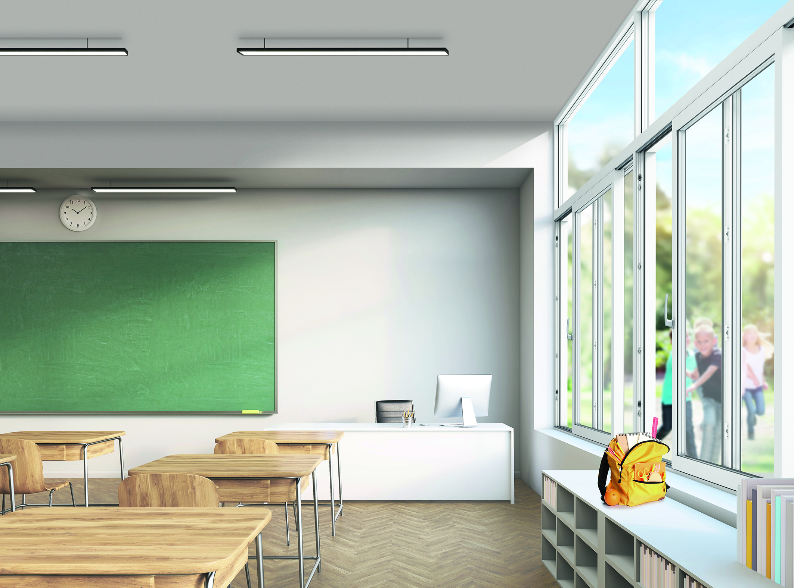

Step 1: Monitor Alerts and Notifications
Stay informed about potential emergencies by monitoring weather alerts, emergency broadcasts, or notifications from your school or college.
Pay attention to warnings or instructions provided by authorities regarding the need to stay indoors.
Step 2:Seek Shelter
Move to a safe and secure location indoors, such as a designated shelter area, basement, or interior room.
Choose a room with sturdy walls and no windows if possible, as this provides the best protection from external hazards.

Step 3: Close and Seal Doors and Windows
Close all doors and windows to prevent outside air, debris, or contaminants from entering the building.
If available, use tape or towels to seal gaps around doors and windows to further minimize infiltration.
Step 4: Turn Off HVAC Systems
Turn off heating, ventilation, and air conditioning (HVAC) systems to prevent the circulation of outside air into the building.
This helps maintain a safe and controlled indoor environment.
Step 5: Stay Informed
Keep a battery-powered radio, mobile phone, or other communication devices handy to stay informed about developments and receive updates from authorities.
Listen for instructions on when it is safe to leave the building or take additional precautions.
Step 6: Gather Emergency Supplies
Have essential emergency supplies on hand, such as water, non-perishable food, flashlights, batteries, first aid supplies, and any necessary medications.
Be prepared to sustain yourself and your household for an extended period if needed.
Step 7: Stay Calm and Reassure Others
Remain calm and reassure others, especially younger students or individuals who may be feeling anxious or frightened.
Provide support and comfort to those around you and help maintain a sense of calmness and stability.
Step 8: Follow Safety Guidelines
Follow any specific safety guidelines or instructions provided by authorities for staying indoors during emergencies.
This may include measures such as turning off utilities, avoiding the use of open flames, or taking precautions against potential hazards
Step 9: Avoid Unnecessary Risks
Refrain from venturing outside or engaging in activities that could put you at risk during the emergency.
Stay indoors until authorities provide guidance that it is safe to leave or until the threat has passed.
Step 10: Stay Prepared
Stay prepared for emergencies by familiarizing yourself with emergency procedures and practicing drills regularly.
Being proactive and prepared can help you respond effectively and stay safe during unexpected events.